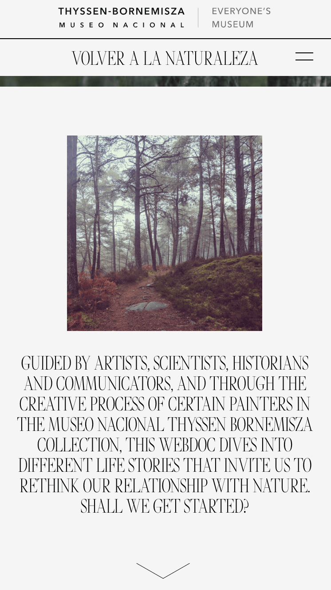
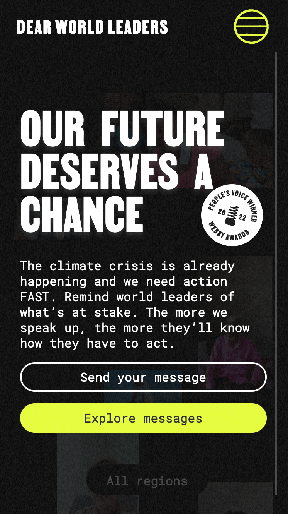

Proximity
Electric Literature
https://electricliterature.com/
This website uses proximity by grouping the articles and all of the info about it together. The use of proximity makes the page easy to understand so that users know what topics are meant to be grouped together without having to think about it.
Whitespace
Thyssen-Bornemisza Museo Nacional
This website has good use of whitespace. All of the elements have good padding and it makes the site very readable and easy to understand.
Contrast
Dear World Leaders
This website makes good use of the contrast principle by using color and font size that creates emphasis and draws the eye. There is contrast in color between the dark background and white font, and green button. It also uses contrast between font sizes, the large text conveys the main message of the website and the reader sees it before the smaller text.